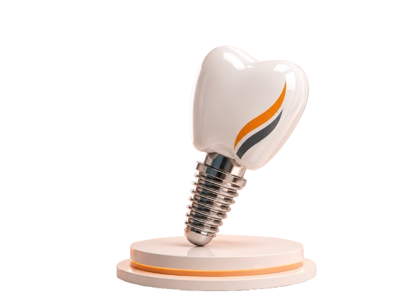
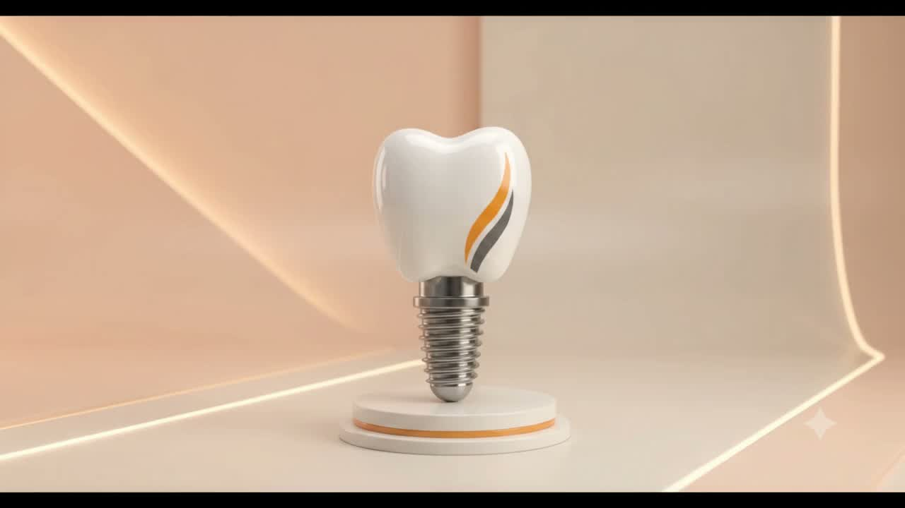

Fig. 01 — Treatment Suite
Precision dentistry, advanced implantology and personalised care — from Akola’s trusted multi-specialty dental practice.
Patient Rating
Reviews
Patients

Modern dentistry with a human approach — every material, plan and appointment considered around the person in the chair.
Explore our approach →
Scroll through 50 crafted frames as the implant evolves from a single precise detail into a complete, confident smile.
Saraf Dental Care was founded on the belief that restorative dentistry is precision work performed on living tissue — and deserves the same rigor as any exacting craft. Every plan begins with full diagnostics. Every material is chosen for the individual. Every visit is built around comfort, not correction alone.
Premium titanium implants, planned digitally to sub-millimeter accuracy.
02Veneers, whitening and bonding, hand-finished for a natural result.
03CBCT imaging, intraoral scanning and CAD/CAM restorations, in-house.
04Thin ceramic shells, shade-matched by hand to the surrounding dentition.
05Invisalign-system alignment, planned from a full 3D scan.
06Structured hygiene and screening for long-term oral health.

Full-arch and single-tooth implants planned to the tenth of a millimeter, placed through guided surgery, and followed for the life of the restoration.
Explore Implantology →
Case 01 — Full-Arch Restoration

Case 02 — Porcelain Veneers

Case 03 — Single Implant
Every plan is measured, modeled and reviewed before treatment begins.
Costs, timelines and options are laid out clearly, with nothing assumed.
Comfort and follow-up matter as much as the clinical outcome itself.


“Exceptional precision, care and attention from the first consultation.”
Ananya R. — Full-Arch Implants
“The calmest I have ever felt walking into a dental appointment.”
Rohan K. — Root Canal Therapy
“My veneers were matched so precisely, no one can tell which teeth were treated.”
Meera P. — Porcelain Veneers
Implantology, aesthetic dentistry, digital dentistry, orthodontics, endodontics and preventive care — see the full services directory for details.
It begins with a CBCT scan and digital plan, followed by guided placement and, after healing, the final restoration.
Single-tooth cases often resolve in 8–16 weeks. Full-arch cases typically take 3–6 months from consultation to final restoration.
Yes — we model the expected result digitally before any irreversible treatment begins.
Yes — we welcome patients from across Maharashtra and beyond, including NRIs visiting home; we coordinate compressed, multi-visit treatment plans where needed.